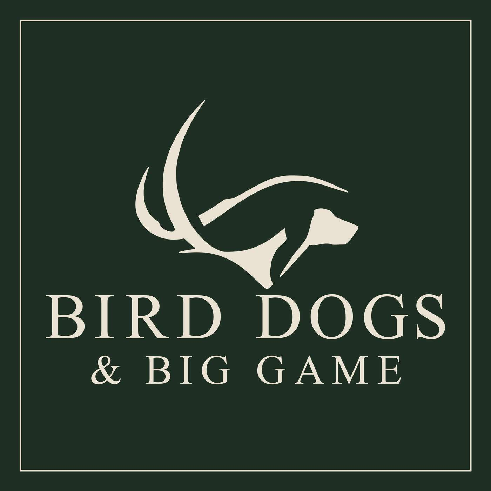

Episode 64 · October 10, 2026 · 10:58
Big News: The Bird Dog Podcast Is Becoming Bird Dogs & Big Game

About This Episode
Big news from the field: The Bird Dog Podcast is becoming Bird Dogs & Big Game, and I'm joining the Outdoor Radio Network on iHeartRadio as a host. In this short solo episode, I share how the new weekly radio show will work, why we're adding big game to the conversation, and a little more about my own background chasing elk, deer and more with a bow. Don't worry, bird dogs are still the heart of the show. In this episode:
Questions about the training topics in this episode? Tyce works with bird dog owners and hunters through Utah Bird Dog Training. Reach out to work with him directly.
Resources & Links
- The Gunshy Fix — Sound conditioning program for gunshy dogs.
- Kuranda Dog Beds — Elevated, chew-proof dog beds built for working dogs.
- Gunner — Crash-tested kennels, bumpers, and gear for working dogs.
- NuVet — Cold-pressed supplements for optimal dog health.
- All American Canine — Made-in-the-USA treats and supplements for working dogs. Promo code: UTAHBIRDDOG.
- Paradigm Sporting Dog — Veterinarian-designed first aid kits for bird dogs.
- Utah Bird Dog Training — Tyce's professional training services.
- Field Bred Golden Retrievers — Tyce and Rachel's golden retriever breeding program.
- Utah Pointing Labs — Tyce's pointing lab breeding program.
Transcript
Full transcript for Episode 64: Big News: The Bird Dog Podcast Is Becoming Bird Dogs & Big Game.
Tyce
Hey everyone, welcome to the Bird Dog Podcast. My name is Tyce Erickson, thanks for tuning in to the show. This show is actually gonna be kind of more of an announcement than a show. So, a little while ago, Outdoor Radio Network, they reached out to me and asked if I would be a host on Outdoor Radio Network, which is on iHeartRadio. It's a 24-7 live streaming outdoor radio station. So, if you guys are interested in listening to that, check out Outdoor Radio Network on iHeartRadio. And I'm gonna do, once a week, gonna do a show on there. It's gonna be pretty much my podcast, but in a radio show format. So, it's gonna be a little new to me, when I repost the show, which I will do here on the podcast. This will still kind of stay in a podcast-esque type format. So, but on the radio show, there's obviously segments with commercials in between those, because it is live radio. I'm pretty excited about it. Before, really, podcasts came out, I remember sitting out with my dad and, you know, we'd listen to the radio and driving around the car and I was saying, man, it seems like all that's on the radio is politics and the news. And, I was like, man, it'd be cool if they had, like an outdoor radio station where they just talked about, like, hunting and fishing and different products and all that stuff that was just on the radio that you could play in your car. And then a couple years came, came, went along and podcasts started coming out where people would obviously have their own shows and talk about, just like this show, have people on and talk about products and things they're passionate about. So, but it's kind of fun. It's kind of funny to see this all come around and be able to do the podcast, which we've started and I've enjoyed, sharing some of the information that I've learned over the years with you guys. And then it's also going to be fun to be on a radio show. So, I feel honored to be a host on that show and hope that it goes well and continue to have cool guests on and talk about products and bird dogs. And, the new change which we're going to be changing here is we're gonna actually change the name of the show. So we're going to call the show Bird Dogs and Big Game Radio, or Bird Dogs and Big Game Podcast when it's on here. So, obviously in the name, Bird Dogs and Big Game opens up another realm. So, a little background about me is, yes, I'm a professional dog trainer and I hunt a lot of birds and have a passion and love for that but a lot of you guys may know and may not know, but I'm also an avid big game hunter. So, I've big game hunted ever since I was a young man, spending time in the field, you know, with my dad and brothers growing up. I'm an avid, avid archery hunter. That's probably one of my biggest passions. I love hunting with a bow. I've taken a lot of the North American animals with my bow, and lots of deer, lots of elk, bears, mountain lions, I've taken some waterfowl, lots of stuff, javelina. So, I, my biggest, other passion would be backcountry hunting. I have pack llamas, and I, also grew up with horses, so I'm, I'm familiar with those, and mules. And I currently have llamas because they kind of fit my lifestyle right now. I'm a busy man and I don't have a lot of time to do the maintenance that a horse requires, but the llamas kind of fit the bill where I'm still physically good enough shape that I can hike around the hills with my llamas because I don't have much on my back. When I elk, I like going far in and I don't enjoy spending days packing meat out on my back. I've done a lot of that, and since I've gotten into pack llamas, I try not to hunt elk unless I have them, and I enjoy hunting with them or keeping them close by, so when I do bring an animal down, I get my llamas to the animal, break it down, and then pack that back out to camp in one trip, and it just makes life easier and saves time when you have, work and kids and everything that's going on in our lives. So, so this is the announcement. It's going to be called The Bird Dog and Big Game Podcast. So, and then on Outdoor Radio Network, if you want to listen to me there, or just listen to it in general, it's going to be called, the Bird Dog and Big Game Radio. So, that's kind of a cool announcement that I'm excited to share with you guys. We're going to be updating our website and our social media and everything like that to show the new change. So, I'm excited. We'll just open up more conversation. So, we're going to continue to have lots of bird dog conversations on here. It's probably going to be about a 60-40 split. 60% bird dogs and 40% roughly big game related things. So if you guys have any topics you want us to talk about, go ahead and send us in a DM and it's probably the easiest right now send us a DM on social media, but the topic and we will be happy to address those. Again, I live in Utah, so this is gonna be a more Western big game. I have yet to kill a buck whitetail. I have killed a doe whitetail in Idaho, and that was fun, but I have done a lot of big game. I've also gone to New Zealand hunting, big game, Alaska, and the western United States. So I haven't done a whole lot of big game hunting in the east. So I will one day, I'd love to take a nice, mature whitetail with my bow or a gun. And I'm not, again, I'm not an archery snob only. I just really enjoy it. I love the challenge. I love getting in close, you know, playing the wind. Just trying to, you know, that game of cat and mouse with, deer and elk is my love outside of bird dogs and hunting waterfowl and upland game with them. So, but I also love getting a rifle in the hand at that time of year. When it's colder and maybe you're hunting Colorado and the deer are rutting, it's just every time of year is so special and being in the mountains, being in the outdoors. There's a special window when you have maybe a little bit of money. You're able to do some of these fun things. You have health and that's kind of a special time in life because eventually you may have a little more money but you don't have the health. So, I try to keep myself pretty much, pretty physically fit, so I can hopefully continue to enjoy those things that I love to do in the years to come. And I still have young kids too, and I want to be able to take my young kids into the hills and be able to keep up with them and have some good experiences in the future with them. If you guys want to help us out, check out our sponsors. Check out All American Canine. There's a code there. If you order some of their products, they have some awesome, just natural, dog treats if you want to try those out with your dogs. I haven't had them disrupt my dog's stomach at all, and they've enjoyed all of them. So, and there's some paw stuff you can put on their paws for sore paws. I like that. They have some fish oils. They got a lot of good products and they're all good ingredients in there. Again, I'm not going to promote anything on here that according to my knowledge, is not good stuff, right? So, stuff we've used, I tried out on my dogs and, and we support these companies. So, NuVet, they make some great products there. They have some great shampoos. They can try on your dog supplements. Cold press supplements. So go ahead and check them out. Gunner Kennels, get on there, check them out. And there's just, yeah, check out that list and support those companies. So, Paradigm Sporting Dog First Aid Kits, if you're looking for a first aid kit for your dog and you don't have one of those, check them out. And also check out Kuranda dog beds if you're looking for a cot inside your house or in your dog run area, get your dog up off the cement or the ground. Those are a great option for that. So, thanks guys. I'm looking forward to this new kind of transition with the show and the radio and, it's gonna be, again, we're gonna do the show on the radio first, and then later we're gonna put it here on the podcast. So it is gonna be a little different format. Again, we gotta keep it to a set time because it will be on the radio. So it's gonna be pretty much a set podcast time, for the most part, unless I add something before and after the show. So, thanks for tuning in. Thanks for supporting me and my family on the show and, in this podcast and supporting some of our partners that we're working with. We really appreciate it and we'll look forward to future podcasts and shows with you guys. Have a good day, guys, and good luck hunting if you're out in the field. And remember to train for how you hunt, and we'll see you in the next podcast.
About the Host
Tyce Erickson
Tyce Erickson is a professional bird dog trainer and the owner of Utah Bird Dog Training in Utah. For nearly two decades he has worked with pointing dogs, retrievers, and family hunting dogs, helping owners build dogs that are capable and enjoyable in the field. Bird Dogs & Big Game is an extension of that work: honest conversations on training, hunting, breeding, and everything that goes into a life spent working dogs.
More About Tyce